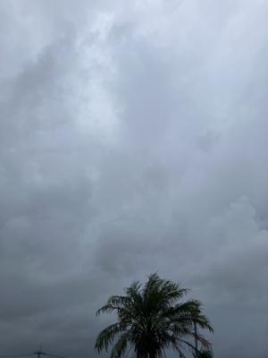

うるがいの話 ある日
最新: 台風１８号【うるがいの話 ある日】とは 一日だけのプログです
『うるがいの話』の最新一日だけのプログで、通信料が少なく経済的だ。カニの画像をクリックすると全ての日付が載る『うるがいの話』サイトを表示します
|
|
【うるがいの話】 うるがい(ｳﾙｶﾞｲ urugai)とは、『もずくがに』の名前でとても大きくなります。 |
|---|---|
|
|
【カミマヤーの話】 猫のことを方言でマヤーといいます。カミマヤー（kamimayaa）とは、神の猫のことです。 |
|
【たながぁの音楽】 たながぁ（ﾀﾅｶﾞｰ tanagaa）とは手長えびのことで、何種類かあり大きいのは車 エビぐらいになります。 |

|
【ぶながぁの話】 ぶながぁ(ﾌﾞﾅｶﾞｰ bunagaa)とは、赤い髪の毛、赤い身体、そして身長は１ｍ２０ｃｍ ぐらい、川の蟹を食べているの目撃された。場所は沖縄県国頭郡大宜味村のと ある村僕の隣近所に住んでいる爺さんから、聞いた話です。 |
|
|
【ギーマの話】 ギーマ(giima)とは、山原の里山に咲くスズランに似た、 花を付けます。実は食べられます、 気が付くと口の周りが紫になっています。 |
2024年10月04日 (金）台風１８号
16:51

コドモは、台風１８号の影響をうけず内地へ飛び立った。予報のコース
をことごとく外してくれた。帰りに、『南風原くがに市場』へ寄る。那
覇空港自動車道を通ることにした、自動車道に入るまでが混雑していた
空港から、３０分程かかったようだ。 工事のせいだろうが、終わるま
で二度とこのコースは行かないと決意する。『南風原くがに市場』でバ
タフラピーの花が９０円で売っていた、自宅でとれる３日分か。乾燥し
たものは売っていなかった。花が咲く時期が過ぎたら、なくなるのだろ
う。
遅いと言えば、２階のルターが壊れたので１階のルーターのＷｉ－Ｆｉ
を利用する。遅い、２階のルターにつないでいたＬＡＮケーブルを、直
接利用することに成功する。グーグルのインターネット速度で測った見
た。やはり、直結がはやい！
ＬＡＮケーブル直結は
下り ７７ＭＢ．６ 登り ８１ＭＢ．７ 非常に高速
１階のルーターのＷｉ－Ｆｉ
下り ３６ＭＢ．７ 登り ４４ＭＢ．０ 高速
１６時４０分 ビットコインの総資産 ￥２５、９０５（↓９６）